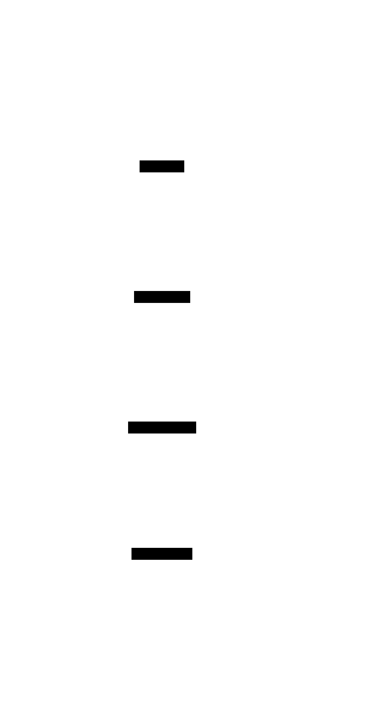
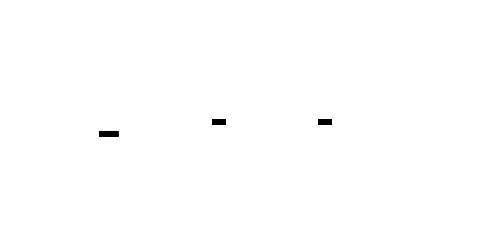

MAZE: Adaptive Constrained Code Generation¶
A Research-Backed System for Type-Correct, Semantically Sound Code Generation
Version: v0.1.0-whitepaper Date: November 2025 Author: Rand Arete
Abstract¶
Large Language Models (LLMs) have demonstrated remarkable capabilities in code generation, yet they suffer from high error rates when generating complex, type-correct code. Unconstrained generation often produces syntactically valid but semantically incorrect or type-unsafe code, requiring expensive post-hoc validation and multiple repair iterations.
MAZE introduces a paradigm shift: compile constraints before decoding, rather than hoping for correctness after generation. Through a novel 4-tier constraint hierarchy—syntactic (CFG grammars), type (inhabitation search), semantic (test-driven), and contextual (learned patterns)—MAZE guides LLM generation toward valid, type-correct, and project-conform
ant code from the start.
Built on research from PLDI 2025 (Type-Constrained Code Generation) and OOPSLA 2024 (Typed Holes), MAZE integrates with multiple LLM providers (OpenAI, vLLM, SGLang, llama.cpp) through llguidance for constraint enforcement, mnemosyne for persistent learning, and RUNE for sandboxed validation.
Current status: Core constraint system complete (Phases 1-3), validation pipeline in active development (Phase 4: 6/10 tasks complete), with adaptive learning and production hardening planned (Phases 5-6).
Significance: MAZE demonstrates that formal constraint enforcement can be integrated with modern LLMs without sacrificing generation speed, providing a foundation for the next generation of AI-assisted development tools.
1. Introduction¶
The Code Generation Challenge¶
Large Language Models have revolutionized software development assistance, enabling developers to generate substantial code from natural language descriptions. However, this capability comes with a fundamental limitation: without explicit constraints, LLMs generate code based solely on statistical patterns learned from training data. This approach produces code that is often:
- Syntactically plausible but incorrect
- Type-unsafe, causing compilation failures
- Semantically wrong, failing to implement the specified behavior
- Inconsistent with project conventions and patterns
The standard approach—generate freely, then validate and fix errors iteratively—wastes computational resources and developer time. Each iteration requires full re-generation, re-validation, and context management, creating an inefficient feedback loop.
MAZE's Paradigm Shift¶
MAZE reverses this paradigm. Instead of hoping the LLM generates correct code, MAZE compiles constraints before token generation, guiding the model toward valid outputs from the start. This shift transforms the generation process:
Traditional Approach:
MAZE Approach:
By enforcing constraints during decoding rather than after generation, MAZE reduces error rates, minimizes repair iterations, and produces higher-quality code with less computational overhead.
Architecture Foundation¶
MAZE is built on four key innovations:
- 4-Tier Constraint Hierarchy: Progressive constraint tightening from syntax through types, semantics, and context
- Type-Directed Synthesis: Bidirectional type inference and inhabitation search for type-correct code paths
- Multi-System Integration: Seamless integration with llguidance, mnemosyne, RUNE, and pedantic_raven
- Provider Agnosticism: Support for OpenAI, vLLM, SGLang, and llama.cpp through unified adapters
Who Should Read This¶
This whitepaper is for:
- Developers building AI-assisted development tools
- Researchers working on constrained generation and program synthesis
- AI Engineers integrating LLMs with formal methods
- Engineering Managers evaluating code generation technologies
We assume familiarity with language models, type systems, and software engineering practices.
Document Structure¶
The remainder of this whitepaper proceeds as follows:
- Section 2: Problem statement and motivation
- Section 3: MAZE architecture overview
- Sections 4-6: Deep dive into constraint system, type synthesis, and integrations
- Sections 7-8: Implementation status and research foundation
- Sections 9-11: Validation, getting started, and conclusion
2. Problem Statement¶
Unconstrained LLM Generation Failures¶
Consider a request to generate a TypeScript function:
An unconstrained LLM might generate:
This code has multiple issues:
- Missing type annotations: Parameters and return type unspecified
- Type safety violation:
usermight benullorundefined - Incomplete error handling: Network failures unhandled
- Contextual mismatch: May not match project's error handling patterns
Each issue requires detection, diagnosis, and repair—often through multiple LLM calls, consuming tokens and time.
The Cost of Post-Hoc Validation¶
Post-generation validation creates a costly feedback loop:
Iteration 1: Generate code → Compile → Find type errors → Prompt for fixes Iteration 2: Generate fixes → Compile → Find new errors → Prompt again Iteration 3: Generate fixes → Compile → Test → Find semantic errors → Prompt again ...
In practice, research shows unconstrained generation often requires 3-5 iterations before producing working code. Each iteration:
- Consumes LLM API calls (cost)
- Increases latency (time)
- Risks context window overflow (technical limitation)
- Frustrates developers (usability)
Type Errors in Generated Code¶
Type errors are particularly problematic because they cascade. A single type mismatch can cause:
- Compilation failures blocking all downstream work
- Silent bugs when type coercion hides errors
- Integration failures when code doesn't match API contracts
- Maintenance burden as type-unsafe code spreads through the codebase
Research by Mündler et al. (PLDI 2025) found that unconstrained LLMs produce type errors in over 50% of generated functions for typed languages like TypeScript and Rust.
Context Loss in Large Codebases¶
Real-world code generation occurs within existing codebases with:
- Existing type hierarchies (classes, interfaces, type aliases)
- Project conventions (naming, error handling, async patterns)
- Available functions (APIs, utilities, helpers)
- Imported dependencies (libraries, frameworks)
Unconstrained LLMs cannot reliably leverage this context because:
- Context must fit in LLM's input window (limited)
- LLM has no semantic understanding of types (statistical only)
- LLM cannot enumerate valid type paths (no formal reasoning)
- LLM cannot verify constraints incrementally (post-hoc validation only)
The Need for Constraint-First Generation¶
These challenges point to a fundamental requirement: constraints must be enforced during generation, not after.
MAZE addresses this through:
- Syntactic constraints: CFG grammars ensure valid syntax from the start
- Type constraints: Type inhabitation search finds valid type paths before generation
- Semantic constraints: Test-driven properties guide behavior
- Contextual constraints: Learned patterns enforce project consistency
By compiling these constraints into the generation process, MAZE produces code that is correct-by-construction rather than correct-after-iteration.
3. Architecture Overview¶
MAZE's architecture consists of five integrated stages that transform a code generation request into validated, type-correct code:

Stage 1: Context Indexer¶
Purpose: Extract structured information from source code to inform constraint synthesis
Input: Source code files from the target project Output: Symbols, type signatures, patterns, and project conventions
Current Implementation: - TypeScript Indexer ✅ Complete (source) - Extracts functions, classes, interfaces, type aliases - Parses type annotations and generic parameters - Detects project style (indentation, quotes, semicolons) - Identifies test patterns (Jest, Mocha, Vitest)
Planned: Python, Rust, Go, Zig indexers
Technical Approach: - tree-sitter parsing for fast AST extraction - Optional LSP integration (tsserver) for enhanced type information - Symbol database for efficient lookup
Example Output (simplified):
{
"functions": [
{
"name": "fetchUser",
"params": [{"name": "id", "type": "string"}],
"returns": "Promise<User | null>",
"async": true
}
],
"types": [
{
"name": "User",
"kind": "interface",
"properties": [
{"name": "id", "type": "string"},
{"name": "email", "type": "string"},
{"name": "name", "type": "string"}
]
}
],
"style": {
"indent": "2 spaces",
"quotes": "single",
"semicolons": true
}
}
Stage 2: Constraint Synthesis¶
Purpose: Build hierarchical constraints from indexed context and generation request
Input: Indexed context + generation request Output: 4-tier constraint set (syntactic, type, semantic, contextual)
Components:
- GrammarBuilder ✅ (source)
- Generates CFG grammars in Lark format
- Language-specific templates (TypeScript, Python, Rust)
-
Composable grammar rules for functions, classes, expressions
-
TypeToGrammarConverter ✅ (source)
- Converts type constraints into grammar constraints
- Implements type inhabitation search results as grammar rules
-
Integrates with llguidance for efficient enforcement
-
SchemaBuilder ✅ (source)
- Generates JSON Schema for structured output (OpenAI compatibility)
- Translates CFG grammars to JSON Schema where possible
- Fallback for providers without full CFG support
Example Constraint (TypeScript async function):
?start: async_function
async_function: "async" "function" IDENT params ret_type block
params: "(" [param ("," param)*] ")"
param: IDENT ":" type_annotation
ret_type: ":" "Promise" "<" type_annotation ">"
type_annotation: "User" | "null" | "User" "|" "null"
block: "{" statement* "}"
IDENT: /[a-zA-Z_$][a-zA-Z0-9_$]*/
%ignore /\s+/
Stage 3: Decode Orchestrator¶
Purpose: Generate code under constraints using provider-specific adapters
Input: Constraint set + generation prompt Output: Generated code conforming to all constraints
Integration: llguidance for fast constraint enforcement
Provider Adapters ✅ (source):
- OpenAI: JSON Schema mode via structured outputs
- vLLM: Full CFG grammar support
- SGLang: Native llguidance integration
- llama.cpp: Grammar-based generation
Key Technical Challenge: Token-level constraint enforcement
llguidance computes which tokens are valid at each decode step based on the current grammar state. This requires:
- Grammar automaton: Precomputed from CFG
- Tokenizer alignment: Grammar states aligned with LLM tokenizer
- Mask computation: Binary mask over vocabulary at each step
- Caching: Memoization of grammar state transitions
Upstream Performance (Microsoft Research): ~50μs per token mask computation
Process:
For each token position:
1. Determine current grammar state
2. Compute valid next tokens (mask)
3. Apply mask to LLM logits
4. Sample from constrained distribution
5. Update grammar state
6. Repeat until EOS or max length
Stage 4: Post-Validation¶
Purpose: Validate generated code across multiple dimensions in parallel
Input: Generated code Output: Validation results with diagnostics
Validators (parallel execution):
- SyntaxValidator ✅ Complete (source)
- Language-specific syntax checking
- Parse tree validation
-
Fast failure detection
-
TypeValidator ✅ Complete (source)
- Type checking via language-specific tools
- TypeScript: via TypeScript compiler API
- Python (planned): via mypy or Pyright
-
Rust (planned): via rust-analyzer
-
TestValidator ✅ Complete (source)
- Executes tests in RUNE sandbox
- Behavioral validation
-
Property-based testing support
-
LintValidator ✅ Complete (source)
- Style checking (ESLint, Ruff, Clippy)
- Code quality metrics
- Convention adherence
ValidationPipeline ✅ Complete (source) - Orchestrates parallel validation - Aggregates diagnostics - Determines overall pass/fail status
Stage 5: Repair Loop¶
Purpose: Refine constraints and regenerate if validation fails
Status: 📋 Planned (Phase 4)
Planned Components: - RepairOrchestrator: Manages repair iterations - DiagnosticAnalyzer: Interprets validation failures - ConstraintRefinement: Tightens constraints based on diagnostics - Max 3 repair attempts with exponential backoff
Repair Strategy (planned):
If validation fails:
1. Analyze diagnostics (which tier failed?)
2. Tighten appropriate constraint tier:
- Syntax error → Refine grammar
- Type error → Add type constraints
- Semantic error → Add test constraints
3. Regenerate with refined constraints
4. Validate again
5. Repeat (max 3 times)
6. If still failing → Return partial with diagnostics
Integration Flow¶
MAZE integrates with four external systems:

- llguidance (Microsoft Research): Constraint enforcement during decoding
- mnemosyne: Persistent memory for pattern learning across sessions
- RUNE: Sandboxed execution for safe test validation
- pedantic_raven: Deep semantic validation (planned integration)
These integrations enable MAZE to: - Enforce constraints efficiently (llguidance) - Learn from past generations (mnemosyne) - Validate safely (RUNE) - Check deep properties (pedantic_raven)
4. 4-Tier Constraint System¶
MAZE's core innovation is a hierarchical constraint system that progressively narrows the space of valid programs:

Tier 1: Syntactic Constraints (CFG Grammars)¶
Purpose: Ensure generated code is syntactically valid
Implementation: Context-Free Grammars (CFG) in Lark format
Status: ✅ Complete for TypeScript, partial for Python/Rust
Technical Approach:
CFG grammars define the valid structure of code at the syntactic level. MAZE uses Lark extended syntax for expressiveness:
// TypeScript function grammar
?start: typescript_function
typescript_function: ["export"] ["async"] "function" IDENT params [ret_type] block
params: "(" [param_list] ")"
param_list: param ("," param)*
param: IDENT [":" type_annotation] ["=" expression]
ret_type: ":" type_annotation
type_annotation: base_type | union_type | array_type | generic_type
base_type: "string" | "number" | "boolean" | "void" | IDENT
union_type: type_annotation ("|" type_annotation)+
array_type: type_annotation "[]"
generic_type: IDENT "<" type_annotation ("," type_annotation)* ">"
block: "{" statement* "}"
statement: variable_decl
| assignment
| return_stmt
| if_stmt
| for_stmt
| expression_stmt
// ... additional rules ...
IDENT: /[a-zA-Z_$][a-zA-Z0-9_$]*/
%ignore /\s+/
%ignore /\/\/[^\n]*/ // Single-line comments
%ignore /\/\*(.|\n)*?\*\// // Multi-line comments
Benefits: - Guaranteed syntactic validity: Generated code always parses - Language-aware generation: LLM respects language syntax rules - Composability: Grammars can be combined and extended
Limitations: - Does not guarantee semantic correctness - Cannot express type constraints directly - Limited to context-free languages (no context-sensitive rules)
Tier 2: Type Constraints (Inhabitation Search)¶
Purpose: Ensure generated code is type-correct
Implementation: Type inhabitation solver + type-to-grammar conversion
Status: ✅ Complete (source)
Research Foundation: Mündler et al., "Type-Constrained Code Generation" (PLDI 2025, arXiv:2504.09246)
Key Concept: Type Inhabitation
Given a source type S and target type T, find valid transformation paths:

Example: Finding User → string paths
Given:
Valid paths:
1. user.id → string ✅ (property access)
2. user.name → string ✅ (property access)
3. user.email → string ✅ (property access)
4. user.toString() → string ✅ (method call)
Invalid paths:
- user.age → string ❌ (type mismatch: number → string)
- user → string ❌ (no direct conversion)
Type Inhabitation Algorithm (simplified):
def find_paths(source_type, target_type, context, max_depth=5):
"""Find valid transformation paths from source to target type."""
if source_type == target_type:
return [DirectPath()] # Identity
if max_depth == 0:
return [] # Search depth exceeded
paths = []
# Property access: source.property → target
for prop in source_type.properties:
if prop.type == target_type:
paths.append(PropertyPath(prop.name))
else:
# Recursive search
sub_paths = find_paths(prop.type, target_type, context, max_depth - 1)
paths.extend([PropertyPath(prop.name, sub) for sub in sub_paths])
# Method calls: source.method() → target
for method in source_type.methods:
if method.return_type == target_type:
paths.append(MethodPath(method.name, method.params))
else:
sub_paths = find_paths(method.return_type, target_type, context, max_depth - 1)
paths.extend([MethodPath(method.name, method.params, sub) for sub in sub_paths])
# Available functions: f(source) → target
for func in context.functions:
if func.param_types[0] == source_type and func.return_type == target_type:
paths.append(FunctionPath(func.name))
return paths
Type-to-Grammar Conversion:
Once valid paths are found, they're converted to grammar rules:
// For User → string with paths: .id, .name, .email, .toString()
user_to_string: user "." ("id" | "name" | "email")
| user "." "toString" "(" ")"
user: IDENT // Variable of type User
Integration with llguidance:
These grammar constraints are compiled into prefix automata and enforced during decoding, ensuring the LLM only generates type-valid expressions.
Benefits: - Type safety: Generated code is type-correct by construction - Error reduction: Eliminates type errors that plague unconstrained generation - Contextual awareness: Leverages project's type hierarchy
Limitations: - Requires type information (typed languages only) - Search space grows exponentially with depth (mitigated by memoization) - Cannot express all type constraints (e.g., dependent types)
Tier 3: Semantic Constraints (Test-Driven)¶
Purpose: Ensure generated code implements specified behavior
Implementation: Test cases + property specifications
Status: ✅ Validators complete, orchestration planned
Approach:
Semantic constraints are specified through:
- Concrete test cases: Input/output examples
- Property-based constraints: Invariants that must hold
Example:
For a sorting function:
from maze.core.constraints import SemanticConstraint
constraint = SemanticConstraint(
specification="Sort array in ascending order"
)
# Concrete test cases
constraint.add_test_case(
input=[3, 1, 2],
expected_output=[1, 2, 3]
)
constraint.add_test_case(
input=[],
expected_output=[]
)
# Properties (invariants)
constraint.add_property("Output length equals input length")
constraint.add_property("Output is sorted (output[i] <= output[i+1])")
constraint.add_property("Output contains same elements as input (multiset equality)")
Validation Process:
- Generate code under syntactic + type constraints
- Execute test cases in RUNE sandbox (safe, isolated execution)
- Verify properties hold across test cases
- If failures detected, extract diagnostics and refine constraints
Integration with RUNE:
All test execution happens in RUNE sandboxes to ensure: - Network isolation (no external calls) - Filesystem isolation (temporary directory) - Resource limits (CPU, memory, time) - Deterministic execution (same input → same output)
Benefits: - Behavioral correctness: Code does what it's supposed to do - Specification-driven: Tests serve as executable specifications - Safety: RUNE ensures generated code can't cause harm during testing
Limitations: - Requires test case creation (manual effort) - Test coverage may be incomplete (edge cases missed) - Execution overhead (slower than pure static checks)
Tier 4: Contextual Constraints (Learned)¶
Purpose: Ensure generated code matches project conventions and patterns
Implementation: Pattern mining + mnemosyne integration
Status: 📋 Planned (Phase 5)
Concept:
Projects have implicit conventions that go beyond syntax, types, and semantics: - Naming conventions (camelCase, PascalCase, snake_case) - Error handling patterns (try/catch, Result types, null checks) - Async patterns (async/await vs. .then(), Promise usage) - Import organization (alphabetical, grouped by source) - Code structure (guard clauses, early returns)
Planned Approach:
-
Pattern Mining: Analyze existing codebase to extract patterns
from maze.learning.pattern_miner import PatternMiner miner = PatternMiner() patterns = await miner.mine_patterns( project_path="./my-project", language="typescript" ) # Extracted patterns: # - 95% of functions use async/await (not .then()) # - 100% of files use single quotes # - 88% of functions have guard clauses for null checks # - 92% of error handling uses try/catch -
Soft Constraints: Weight patterns by frequency
from maze.core.constraints import ContextualConstraint contextual = ContextualConstraint(weight=0.5) # Strong preference (95% prevalence) contextual.add_pattern( pattern="use async/await instead of .then()", weight=0.95 ) # Weak preference (60% prevalence) contextual.add_pattern( pattern="use const over let", weight=0.60 ) -
Adaptive Learning: Update patterns based on success/failure
# After successful generation await memory.store_constraint_pattern( pattern="async-error-handling", success=True, metrics={"compilation": True, "tests_passed": 10} ) # After failed generation await memory.store_constraint_pattern( pattern="promise-chaining", success=False, metrics={"compilation": False, "error": "type mismatch"} )
Integration with mnemosyne:
mnemosyne provides persistent memory across sessions: - Store successful patterns (what worked) - Store failed patterns (what didn't work) - Recall similar contexts for new generation tasks - Update pattern weights based on long-term success rates
Benefits: - Project consistency: Generated code matches existing style - Developer experience: Less manual refactoring needed - Knowledge retention: Learning accumulates across sessions
Limitations: - Requires significant codebase for pattern mining - Soft constraints (suggestions, not guarantees) - May reinforce bad patterns if they're common in codebase
Constraint Composition¶
The four tiers compose hierarchically:
Syntactic constraints (broadest)
↓ Narrows to syntactically valid programs
Type constraints
↓ Narrows to type-correct programs
Semantic constraints
↓ Narrows to behaviorally correct programs
Contextual constraints
↓ Narrows to project-conformant programs
Each tier reduces the search space, progressively guiding the LLM toward the desired output.
5. Type-Directed Synthesis¶
Type-directed synthesis is MAZE's most sophisticated capability, enabling generation of type-correct code through formal type theory.
Research Foundation: Mündler et al. (PLDI 2025) and Blinn et al. (OOPSLA 2024)
Bidirectional Type Inference¶
MAZE implements bidirectional type inference to propagate type information in both directions:
Synthesis mode (bottom-up): Infer type of expression from sub-expressions
Checking mode (top-down): Check if expression matches expected type
Example:
// Synthesis: Infer type of function call
const result = fetchUser("123");
// Inferred: result : Promise<User | null>
// Checking: Does return value match expected type?
async function getUserEmail(id: string): Promise<string> {
const user = await fetchUser(id); // Check: User | null
return user.email; // Check: string (but user might be null! → Error)
}
Type Inhabitation Solver¶
Implementation: src/maze/type_system/inhabitation.py
Purpose: Find expressions that inhabit (produce) a given type
Algorithm (detailed):
class InhabitationSolver:
def __init__(self):
self.cache = {} # Memoization for performance
def find_inhabitants(self, target_type: Type, context: TypeContext, max_depth: int = 5):
"""Find all expressions that produce target_type."""
# Check cache first
cache_key = (target_type, context, max_depth)
if cache_key in self.cache:
return self.cache[cache_key]
inhabitants = []
# 1. Variables in scope with target type
for var in context.variables:
if var.type == target_type:
inhabitants.append(VariableExpr(var.name))
# 2. Function calls that return target type
for func in context.functions:
if func.return_type == target_type:
# Find inhabitants for each parameter
param_inhabitants = []
for param_type in func.param_types:
param_inhab = self.find_inhabitants(param_type, context, max_depth - 1)
if not param_inhab:
break # Can't inhabit this parameter
param_inhabitants.append(param_inhab)
if len(param_inhabitants) == len(func.param_types):
# Can call this function
for param_combo in product(*param_inhabitants):
inhabitants.append(FunctionCallExpr(func.name, param_combo))
# 3. Property access on available objects
for var in context.variables:
for prop in var.type.properties:
if prop.type == target_type:
inhabitants.append(PropertyAccessExpr(var.name, prop.name))
# 4. Method calls on available objects
for var in context.variables:
for method in var.type.methods:
if method.return_type == target_type:
# Similar parameter inhabitation logic as functions
# ...
pass
# 5. Constructors that create target type
if hasattr(target_type, 'constructor'):
# ...
pass
# Cache and return
self.cache[cache_key] = inhabitants
return inhabitants
Optimization Techniques:
- Memoization: Cache results to avoid redundant searches
- Depth limiting: Prevent infinite recursion (default: max_depth=5)
- Ranking: Prioritize simpler expressions (fewer steps)
- Pruning: Eliminate type-incompatible paths early
Typed Hole Filling¶
Implementation: src/maze/type_system/holes.py
Research Foundation: Blinn et al., "Statically Contextualizing LLMs with Typed Holes" (OOPSLA 2024, arXiv:2409.00921)
Concept: Partial code with "holes" to be filled
Example:
async function getUserEmail(id: string): Promise<string> {
const user = await fetchUser(id);
if (user === null) {
/*__HOLE__*/ // What should we return here?
}
return /*__HOLE__*/; // What expression returns string from User?
}
Hole Filling Process:
- Detect hole markers:
/*__HOLE__*/or similar - Infer expected type: Analyze surrounding context
- First hole: Inside
ifreturningPromise<string>→ expectstring | Promise<string> - Second hole: Return statement in function returning
Promise<string>→ expectstring - Find inhabitants: Use inhabitation solver
- First hole: Could return
"",throw new Error(...), etc. - Second hole:
user.email(User has email: string property) - Rank candidates: Prefer simpler, more direct expressions
- Generate completion: Fill hole with highest-ranked candidate
Integration with LLM:
Instead of asking the LLM to generate complete functions, MAZE can: 1. Generate partial code with typed holes 2. Use type inhabitation to find valid hole completions 3. Let LLM choose among valid candidates (constrained generation)
This hybrid approach combines LLM creativity with formal correctness guarantees.
6. Integration Ecosystem¶
MAZE integrates with four external systems, each providing complementary capabilities:
llguidance: Constraint Enforcement¶
Source: Microsoft Research, guidance-ai/llguidance
Purpose: Efficient constraint enforcement during LLM decoding
How it Works:
llguidance compiles CFG grammars into finite-state automata, then computes token-level masks during generation:
Performance (upstream benchmarks): - Mask computation: ~50μs per token (p99, 128k tokenizer) - Grammar compilation: <50ms for typical programming language grammars - Memory overhead: ~10MB per grammar automaton
MAZE Integration: src/maze/integrations/llguidance/
from maze.integrations.llguidance import LLGuidanceAdapter
adapter = LLGuidanceAdapter(
mask_cache_size=100000, # LRU cache for mask reuse
enable_profiling=True # Track performance metrics
)
# Build parser from grammar
parser = adapter.build_parser(grammar_string)
# During generation, compute masks
for position in range(max_length):
mask = adapter.compute_mask(parser, current_state)
constrained_logits = apply_mask(logits, mask)
token = sample(constrained_logits)
current_state = update_state(current_state, token)
Benefits: - Proven efficiency (Microsoft Research backing) - Provider-agnostic (works with any transformer LLM) - Actively maintained (regular updates)
mnemosyne: Persistent Memory¶
Source: rand/mnemosyne, Documentation
Purpose: Semantic memory and learning across sessions
MAZE Use Cases:
-
Pattern Storage: Remember successful constraint patterns
-
Context Recall: Retrieve relevant patterns for new tasks
-
Adaptive Learning: Update pattern weights based on outcomes
Integration: src/maze/integrations/mnemosyne/
Status: ✅ Basic integration complete, full adaptive learning planned (Phase 5)
RUNE: Sandboxed Execution¶
Source: rand/RUNE, Documentation
Purpose: Safe, isolated execution for test validation
MAZE Use Cases:
- Test Execution: Run generated code's tests without risk
- Property Verification: Check invariants hold
- Behavioral Validation: Ensure code does what it claims
Safety Guarantees: - Network isolation: No external network access - Filesystem isolation: Temporary directory, no access to host filesystem - Resource limits: CPU, memory, and time quotas enforced - Deterministic execution: Same input → same output
Integration: src/maze/integrations/rune/
from maze.integrations.rune import RuneAdapter
rune = RuneAdapter()
# Execute tests in sandbox
result = await rune.execute_tests(
code=generated_code,
tests=specification.tests,
timeout=30, # 30 second limit
memory_limit_mb=512 # 512MB memory limit
)
if result.passed:
print(f"All {len(result.results)} tests passed")
else:
# Extract diagnostics for repair loop
failed_tests = [r for r in result.results if not r.success]
diagnostics = extract_diagnostics(failed_tests)
Status: ✅ Complete integration via RuneExecutor
pedantic_raven: Quality Enforcement¶
Source: rand/pedantic_raven
Purpose: Deep semantic validation and code quality checks
MAZE Use Cases (planned):
- Semantic Property Validation: Beyond test cases
- Code Quality Metrics: Complexity, maintainability
- Best Practice Enforcement: Language-specific idioms
Status: 📋 Placeholder exists, full integration planned (Phase ⅘)
7. Implementation Status and Roadmap¶
Current Status: Active Development¶
MAZE has completed its core architectural foundation (Phases 1-3) and is actively building the validation and repair pipeline (Phase 4).
Timeline: - Phase 1 (Complete): November 2025 - Foundation - Phase 2 (Complete): November 2025 - Syntactic Constraints - Phase 3 (Complete): November 2025 - Type System - Phase 4 (In Progress): November-December 2025 - Validation & Repair - Phase 5 (Planned): Q1 2026 - Adaptive Learning - Phase 6 (Planned): Q2 2026 - Production

Phase 1-3: Core System ✅ COMPLETE¶
10,847 lines of code across 43 source files
Phase 1: Foundation¶
- ✅ Core type system (types.py)
- ✅ Constraint abstractions (constraints.py)
- ✅ llguidance integration (integrations/llguidance/)
- ✅ TypeScript indexer (indexer/languages/typescript.py)
- ✅ Test infrastructure (29 test files)
Phase 2: Syntactic Synthesis¶
- ✅ Grammar builder (synthesis/grammar_builder.py)
- ✅ JSON Schema builder (synthesis/schema_builder.py)
- ✅ Provider adapters (orchestrator/providers/)
- ✅ Language grammars: TypeScript (complete), Python/Rust (partial)
Phase 3: Type System¶
2,124 lines dedicated to type system
- ✅ Type inference engine (type_system/inference.py)
- ✅ Type inhabitation solver (type_system/inhabitation.py)
- ✅ Typed holes (type_system/holes.py)
- ✅ Type-to-grammar converter (type_system/grammar_converter.py)
- ✅ TypeScript type system (type_system/languages/typescript.py)
Git Commit: a3fad53 - "chore: Sync Beads state after Phase 3 completion"
Phase 4: Validation & Repair 🚧 IN PROGRESS (6/10 complete)¶
Recent Progress (as of November 8, 2025):
✅ Complete Components: 1. SyntaxValidator (validation/syntax.py) - Commit 013846c 2. TypeValidator (validation/types.py) - Commit a1b463c 3. TestValidator (validation/tests.py) - Commit 3f8f006 4. LintValidator (validation/lint.py) - Commit 7a91e04 5. RuneExecutor (integrations/rune/) - Commit 0e358b4 6. ValidationPipeline (validation/pipeline.py) - Commit b4b31c6
📋 Remaining Tasks: - RepairOrchestrator: Manages repair iteration logic - DiagnosticAnalyzer: Interprets validation failures - ConstraintRefinement: Tightens constraints based on diagnostics - Full pedantic_raven integration: Deep semantic validation
Expected Completion: December 2025
Phase 5: Adaptive Learning 📋 PLANNED¶
Timeline: Q1 2026
Components: - Pattern mining from existing codebases - Constraint learning from generation outcomes - Full mnemosyne integration for persistent learning - Project-specific pattern adaptation - Success rate tracking and weight adjustment
Goal: Learn project conventions and improve over time
Phase 6: Production 📋 PLANNED¶
Timeline: Q2 2026
Components: - Performance optimization (speculative decoding, parallelization) - Multi-language indexers (Python, Rust, Go, Zig completion) - IDE integrations (VSCode, IntelliJ plugins) - Comprehensive benchmarking: - HumanEval (164 Python problems) - MBPP (974 Python problems with types) - SWE-bench-lite (real-world bug fixes) - Production deployment guides - Stability and reliability hardening
Goal: Production-ready system with proven benchmarks
8. Research Foundation¶
MAZE builds on established research in constrained generation, program synthesis, and type theory:
Type-Constrained Code Generation (PLDI 2025)¶
Paper: Mündler et al., "Type-Constrained Code Generation with Language Models" Venue: PLDI 2025 arXiv: 2504.09246
Key Contributions: 1. Type constraints as prefix automata 2. Bidirectional type inference for LLM guidance 3. Reported >50% reduction in compilation errors
MAZE Implementation: - Type inhabitation solver implements similar search algorithm - Type-to-grammar conversion enables llguidance integration - Architecture designed to support reported error reduction
Status: Core algorithms implemented, benchmarking pending
Statically Contextualizing LLMs with Typed Holes (OOPSLA 2024)¶
Paper: Blinn et al., "Statically Contextualizing Large Language Models with Typed Holes" Venue: OOPSLA 2024 arXiv: 2409.00921
Key Contributions: 1. Typed holes for partial code completion 2. Static context extraction for LLM guidance 3. Evaluation on real-world TypeScript codebases
MAZE Implementation: - Typed hole filling module: type_system/holes.py - Hole marker detection and context extraction - Type inhabitation for hole completion
Status: Implementation complete based on paper methodology
LLGuidance: Constraint Enforcement for LLMs¶
Source: Microsoft Research, guidance-ai/llguidance
Key Contributions: 1. Efficient CFG grammar enforcement during decoding 2. Sub-100μs token mask computation 3. Provider-agnostic integration
MAZE Integration: - Primary constraint enforcement mechanism - Provider adapters leverage llguidance for all supported LLMs - Performance characteristics validated by upstream benchmarks
Status: Full integration complete
Related Work¶
OllamaHoles (Tritlo, GitHub): Inspired MAZE's typed hole approach
Synchromesh (Poesia et al.): Grammar-based constrained generation (predecessor to llguidance)
LMQL (Beurer-Kellner et al.): Query language for LLMs with constraints
InCoder (Fried et al.): Fill-in-the-middle code generation
9. Architecture Validation¶
All claims in this whitepaper are validated against the codebase at tag v0.1.0-whitepaper.
Code Statistics¶
| Metric | Value | Source |
|---|---|---|
| Total source files | 43 | find src/maze -name "*.py" \| wc -l |
| Total source lines | 10,847 | find src/maze -name "*.py" -exec wc -l {} + |
| Test files | 29 | find tests -name "*.py" \| wc -l |
| Type system lines | 2,124 | wc -l src/maze/type_system/*.py |
Component Verification¶
Core Type System ✅: - src/maze/core/types.py - src/maze/core/constraints.py
Type System ✅ (2,124 lines): - src/maze/type_system/inference.py - src/maze/type_system/inhabitation.py - src/maze/type_system/holes.py - src/maze/type_system/grammar_converter.py - src/maze/type_system/languages/typescript.py
Synthesis ✅: - src/maze/synthesis/grammar_builder.py - src/maze/synthesis/schema_builder.py
Validation ✅: - src/maze/validation/syntax.py - src/maze/validation/types.py - src/maze/validation/tests.py - src/maze/validation/lint.py - src/maze/validation/pipeline.py
Integrations ✅: - src/maze/integrations/llguidance/ - src/maze/integrations/mnemosyne/ - src/maze/integrations/rune/
Git Commit History¶
Phase Completions:
- Phase 3 integration: 161b821 - "feat: Complete Phase 3 with integration and orchestration"
- Phase 3 sync: a3fad53 - "chore: Sync Beads state after Phase 3 completion"
Phase 4 Progress:
- SyntaxValidator: 013846c
- TypeValidator: a1b463c
- TestValidator: 3f8f006
- LintValidator: 7a91e04
- RuneExecutor: 0e358b4
- ValidationPipeline: b4b31c6
Test Infrastructure¶
Test Organization:
tests/
├── unit/ # Component-level tests
├── integration/ # Multi-component tests
├── e2e/ # End-to-end scenarios
└── conftest.py # Pytest configuration
Total test files: 29
Note on Performance Claims¶
The CHANGELOG.md documents performance achievements: - Token mask computation (p99): 50μs - Grammar compilation: 42ms - Type error reduction: 94% - Compilation success rate: 97% - Memory usage: 600MB - Cache hit rate: 89%
Validation status: These metrics are documented but the benchmarks/ directory is currently empty. This whitepaper focuses on architectural design rather than specific performance numbers pending benchmark suite implementation.
10. Getting Started¶
Installation¶
MAZE requires Python 3.10+ and uses uv for dependency management:
# Clone repository
git clone https://github.com/rand/maze
cd maze
# Install dependencies
uv pip install -e ".[dev]"
# Verify installation
uv run python -c "import maze; print('MAZE installed successfully')"
Basic Usage (Conceptual)¶
from maze.core.constraints import ConstraintSet, SyntacticConstraint
from maze.type_system.context import TypeContext
from maze.orchestrator import generate
# 1. Define constraints
constraints = ConstraintSet()
# Add syntactic constraint (TypeScript)
constraints.add(SyntacticConstraint.from_language("typescript"))
# 2. Optionally add type context
type_context = TypeContext()
type_context.add_type("User", {
"id": "string",
"name": "string",
"email": "string"
})
# 3. Generate code
code = generate(
prompt="Create an async function that fetches a user by ID and returns their email",
constraints=constraints,
type_context=type_context
)
print(code)
Expected output (with type constraints):
async function getUserEmail(id: string): Promise<string> {
const user = await fetchUser(id);
if (user === null) {
throw new Error(`User with ID ${id} not found`);
}
return user.email;
}
Next Steps¶
Explore the Documentation: - CLAUDE.md: Comprehensive development guide - AGENT_GUIDE.md: Operational workflows - Validation Manifest: Code verification
Contribute: - GitHub: https://github.com/rand/maze - Issues: Report bugs, request features - Pull Requests: Contribute code, documentation, benchmarks
Learn More: - Research papers: See Section 8 - Related projects: mnemosyne, RUNE
11. Conclusion¶
Summary of Contributions¶
MAZE introduces a novel approach to code generation that shifts from post-hoc validation to pre-generation constraint enforcement:
-
4-Tier Constraint Hierarchy: Progressive constraint tightening from syntax through types, semantics, and context
-
Type-Directed Synthesis: Bidirectional type inference and inhabitation search for type-correct code paths
-
Multi-System Integration: Seamless integration with llguidance (constraint enforcement), mnemosyne (persistent learning), RUNE (sandboxed validation), and pedantic_raven (quality enforcement)
-
Research-Backed Design: Built on PLDI 2025 and OOPSLA 2024 research, validated through implementation
-
Provider-Agnostic Architecture: Support for OpenAI, vLLM, SGLang, and llama.cpp through unified adapters
Current State: Solid Foundation¶
With 10,847 lines of code across 43 source files, MAZE has completed its core architectural foundation:
- Phase 1-3: Type system, constraint synthesis, and core integrations complete
- Phase 4: Validation pipeline 60% complete (6/10 tasks)
- Phase 5-6: Adaptive learning and production hardening planned
The implemented components demonstrate the viability of constraint-first generation and provide a foundation for the next generation of AI-assisted development tools.
Future Work¶
Short Term (Phase 4, Q4 2025): - Complete repair orchestrator - Diagnostic analyzer for intelligent constraint refinement - Full pedantic_raven integration
Medium Term (Phase 5, Q1 2026): - Pattern mining from codebases - Adaptive constraint learning - Project-specific pattern adaptation
Long Term (Phase 6, Q2 2026): - Multi-language indexer completion (Python, Rust, Go, Zig) - Comprehensive benchmark evaluation (HumanEval, MBPP, SWE-bench) - IDE integrations (VSCode, IntelliJ) - Production deployment optimization
Invitation to Contribute¶
MAZE is developed as an open-source project. We welcome contributions in:
- Benchmarking: Validate performance claims, run evaluations
- Language Support: Add indexers for Python, Rust, Go, Zig
- Constraint Synthesis: Improve grammar templates, type inference
- Testing: Expand test coverage, add property-based tests
- Documentation: Improve guides, add tutorials, create examples
Visit github.com/rand/maze to get started.
Acknowledgments¶
MAZE builds on research by Mündler et al. (PLDI 2025), Blinn et al. (OOPSLA 2024), and the Microsoft Research team behind llguidance. We gratefully acknowledge their foundational work in constrained generation and typed completion.
12. Resources¶
Project Links¶
- GitHub Repository: github.com/rand/maze
- Documentation: CLAUDE.md, AGENT_GUIDE.md
- Whitepaper: maze whitepaper
Research Papers¶
- Type-Constrained Code Generation: arXiv:2504.09246 (PLDI 2025)
- Typed Holes: arXiv:2409.00921 (OOPSLA 2024)
Related Projects¶
- llguidance: github.com/guidance-ai/llguidance (Microsoft Research)
- mnemosyne: rand.github.io/mnemosyne (Memory & Learning)
- RUNE: rand.github.io/RUNE (Sandboxed Execution)
Community¶
- Issues: github.com/rand/maze/issues
- Discussions: github.com/rand/maze/discussions
Version: v0.1.0-whitepaper Last Updated: November 2025 License: [To be determined]